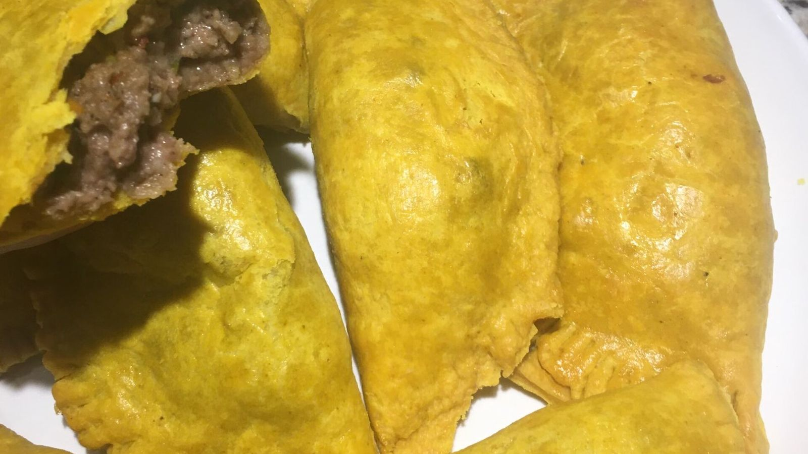

Photo credits
The round photographs of the cluster on the home page and in the video are Sweet Hand's own. The others are shared by their photographers on Wikimedia Commons under the Creative Commons licences below, cropped and resized here. Thank you.
-
 Doubles · Doubles-GT.jpg by GeoTrinity · CC BY-SA 4.0
Doubles · Doubles-GT.jpg by GeoTrinity · CC BY-SA 4.0 -
 Doubles on a Saturday morning · Doubles 02.jpg by Gary Soup · CC BY 2.0
Doubles on a Saturday morning · Doubles 02.jpg by Gary Soup · CC BY 2.0 -
 Roti · Dhalpurie Roti, Channa and Potato, Curry Shrimp, Trinidad and Tobago by Kalamazadkhan · CC BY-SA 3.0
Roti · Dhalpurie Roti, Channa and Potato, Curry Shrimp, Trinidad and Tobago by Kalamazadkhan · CC BY-SA 3.0 -
 The islands · Dhalpurie Roti, Pumpkin, Channa and Potato, Curry Goat, Trinidad and Tobago by Kalamazadkhan · CC BY-SA 3.0
The islands · Dhalpurie Roti, Pumpkin, Channa and Potato, Curry Goat, Trinidad and Tobago by Kalamazadkhan · CC BY-SA 3.0 -
 Oxtail · Oxtail soup-93323.jpg by Raimond Spekking · CC BY-SA 4.0
Oxtail · Oxtail soup-93323.jpg by Raimond Spekking · CC BY-SA 4.0 -
 Jerk · Jerk chicken plate.jpg by stu_spivack · CC BY-SA 2.0
Jerk · Jerk chicken plate.jpg by stu_spivack · CC BY-SA 2.0 -
 Jerk on the grill · Jerk chicken-1001.jpg by Grahampurse · CC BY-SA 4.0
Jerk on the grill · Jerk chicken-1001.jpg by Grahampurse · CC BY-SA 4.0 -
 Patties · Jamaican patties and redstripe.jpg by ritcharnd moskow · CC BY-SA 2.0
Patties · Jamaican patties and redstripe.jpg by ritcharnd moskow · CC BY-SA 2.0 -

By dish, by island, by area · Homemade Jamaican patties.jpg by Lilpisomojado · CC BY-SA 4.0 -
 Pepper sauce · Pepper Sauces 2.JPG by Kalamazadkhan · CC BY-SA 3.0
Pepper sauce · Pepper Sauces 2.JPG by Kalamazadkhan · CC BY-SA 3.0 -
 Sorrel · A glass of hibiscus tea 02.jpg by claralieu · CC BY 2.0
Sorrel · A glass of hibiscus tea 02.jpg by claralieu · CC BY 2.0 -
 Have a sweet hand? · Ali's Doubles - San Fernando, Trinidad & Tobago.jpg by Kalamazadkhan · CC BY-SA 4.0
Have a sweet hand? · Ali's Doubles - San Fernando, Trinidad & Tobago.jpg by Kalamazadkhan · CC BY-SA 4.0 -
 Know someone with a sweet hand? · Doubles - Hosein's in Debe, South Trinidad.jpg by Kalamazadkhan · CC BY-SA 4.0
Know someone with a sweet hand? · Doubles - Hosein's in Debe, South Trinidad.jpg by Kalamazadkhan · CC BY-SA 4.0 -
 Hungry? · Caribbean dinner plate.jpg by Mulling it Over · CC BY-SA 2.0
Hungry? · Caribbean dinner plate.jpg by Mulling it Over · CC BY-SA 2.0 -
 Your date, your guest count · Meal at WikiDiaspora Caribbean Canada, February 2026.jpg by K6ka · CC BY-SA 4.0
Your date, your guest count · Meal at WikiDiaspora Caribbean Canada, February 2026.jpg by K6ka · CC BY-SA 4.0


Figtree by Erik Kennedy, SIL Open Font License 1.1.